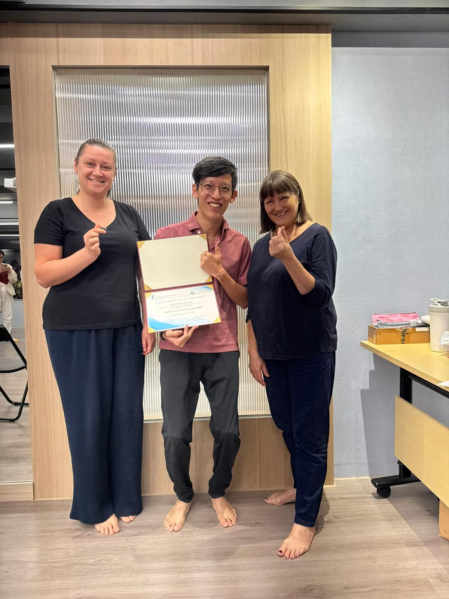
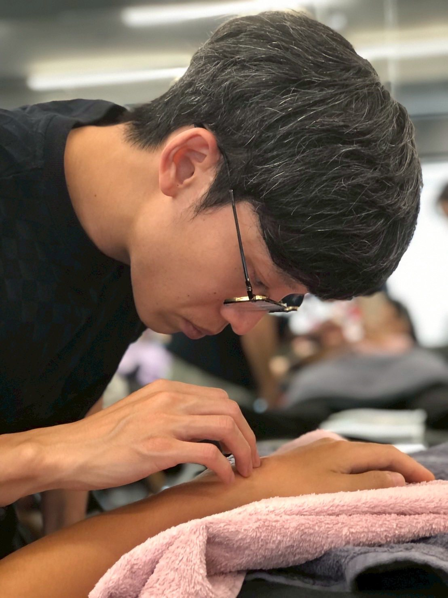
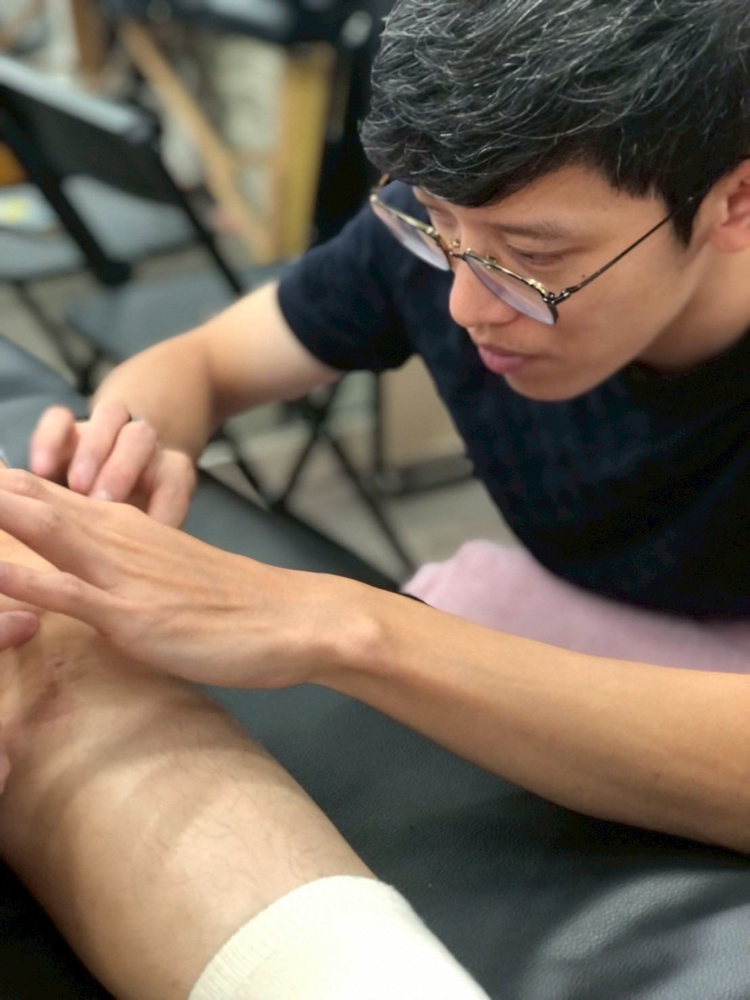
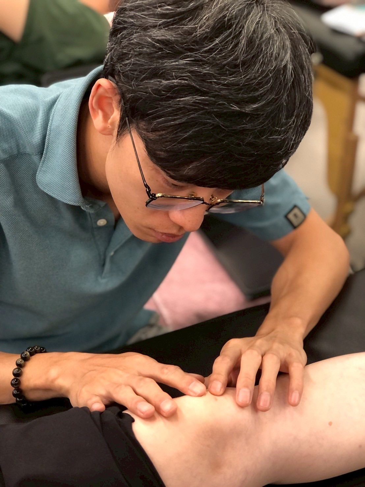
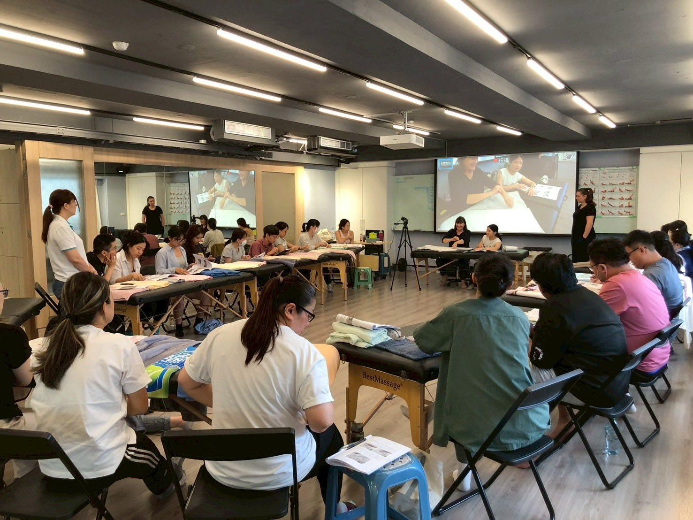
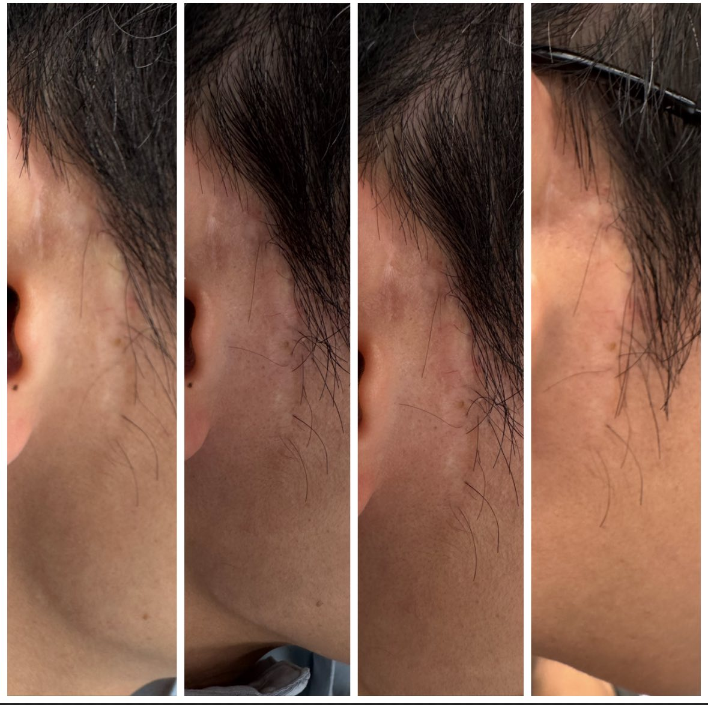
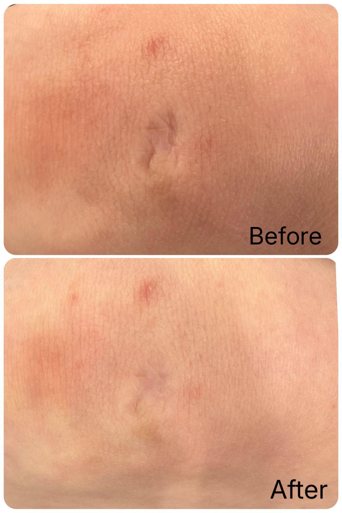
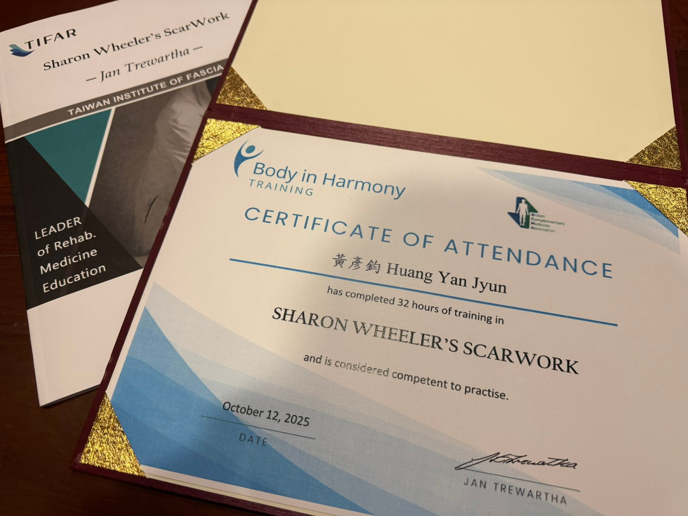

Scar work day4
Scar work day4
年紀真的大了！以前4天的課覺得很短，現在上完覺得真的有累！
筋膜的重要性在近幾年越來越顯著可見，筋膜網絡具有強大的彈性與可塑性，讓身體即便有遍體鱗傷的傷疤，也能持續日常生活的使用。
即便如此，疤痕對筋膜的影響仍是需要被重視的一環，不僅僅是生理結構可見的受限，更是與情緒記憶有關的故事痕跡。
Jan老師說：眼中不能只有疤痕，但治療總是從疤痕開始。
「疤痕，不講武德」 ，肌筋膜脈學中醫應用肌筋膜脈學工作坊，也是在傳達一樣的觀念：疤痕常常需要優先處理！
而在這四天，我學會了怎麼用雙手來跟疤痕對話。
非常感謝Jan老師與Andreea老師，在台灣，在
宏甫研究室TIFAR，已經培訓了三屆共120+位的疤痕徒手治療師，讓更多治療師能獲得這項能力進而幫助更多人注意到疤痕對自己身心靈的影響，如師母所說，真的是一項重要突破的里程碑。
疤痕修復，是一個漫長的過程，治療師也必須具備穩定的身心狀態與防護措施，這項技術意義甚大，但也絕非容易簡單之事。
這次趁連假來進修上課，真的是非常棒的決定，對於疤痕對身體的影響、處理當下的變化與反應，在這幾天的個案實戰中，沈浸式學習，Jan老師就是要你在這幾天學起來，然後馬上用出來！
Scar領域展開，習得新技能，據說明年暑假老師會再來宏甫，非常推薦有興趣的人，一定要參加！
#scarwork
中醫師 黃彥鈞









